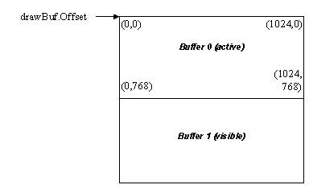
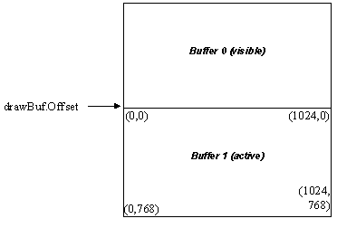

Multi buffering can be achieved by using the SetDrawBuffer function to draw to a different location in video memory combined with the SetDisplayStart function to change the display start address to a different location in video memory. It is up to the application to determine how to divide up the display memory into the multiple display buffers, but for multi-buffering it is recommended that the display buffer offset always be aligned to a multiple of the scanline width for the display mode for maximum compatibility.
In the examples below we examine the case of multi buffering using two buffers, which is usually called double buffering. If enough offscreen video memory is available, multi buffing with more than 2 buffers can be useful because it allows applications to draw continuously without waiting for the vertical retrace when swapping the currently active visible buffer. For example:
activePage = 0;
visiblePage = 1;
drawBuf.dwSize = sizeof(drawBuf);
drawBuf.Offset = modeInfo.BytesPerScanLine *
(modeInfo.YResolution
* activePage);
drawBuf.Stride = modeInfo.BytesPerScanLine;
drawBuf.Width = modeInfo.XResolution;
drawBuf.Height = modeInfo.YResolution;
if (state2d.SetDrawBuffer(&drawBuf) != 0)
PM_fatalError(“Unable to set
draw buffer!”);
if (driver.SetDisplayStart(
modeInfo.BytesPerScanLine *
(modeInfo.YResolution *
visiblePage));
will change the logical framebuffer layout in memory to the following:

All drawing output is sent to the currently active buffer (buffer 0), and all video data is displayed from the currently visible buffer (buffer 1). Double buffering is achieved by using SetDrawBuffer to always draw to the hidden display buffer, and SetDisplayStart to make the CRT controller always display from a different buffer to the one that is currently being drawn into. The visible image can then be instantly updated by swapping the new visible buffer to the buffer that was currently being rendered into with code similar to the following:
activePage = 1;
visiblePage = 0;
drawBuf.dwSize = sizeof(drawBuf);
drawBuf.Offset = modeInfo.BytesPerScanLine *
(modeInfo.YResolution
* activePage);
drawBuf.Stride = modeInfo.BytesPerScanLine;
drawBuf.Width = modeInfo.XResolution;
drawBuf.Height = modeInfo.YResolution;
if (state2d.SetDrawBuffer(&drawBuf) != 0)
PM_fatalError(“Unable to set
draw buffer!”);
if (driver.SetDisplayStart(
modeInfo.BytesPerScanLine *
(modeInfo.YResolution *
visiblePage));
will change the logical framebuffer layout in memory to the following:

Note: If you plan to utilize offscreen memory to store bitmap data, please use the buffer manager functions provided by the GA_bufferFuncs function group to create and manage all flip buffers and offscreen buffers. The buffer functions will provide for maximum compatibility across multiple hardware devices, properly accounting for hardware buffer alignment requirements for storing buffers in offscreen video memory.
Copyright © 2002 SciTech Software, Inc. Visit our web site at http://www.scitechsoft.com